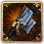
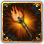

灾难是在1.9 版本中引入的新系统，取代了以前用于模拟国家灾难的基于 MTTH 事件的系统。
灾难状态位于“稳定和扩张”页面中。玩家可以在其中跟踪国家可能发生或已经爆发的灾难的当前状态。灾难一旦爆发，国家将不会再次遭受同类的灾难（除非是阶层灾难），以叛乱为例，如果不满足全局先决条件，灾难的进度将会下降。但如果在满足全局先决条件后，不满足月份进度条件，灾难的进度将会暂停。
在当前版本的游戏中，可能爆发的灾难如下[1]：
常规灾难

Aspiration for Liberty
民众对自由和开明制度的渴望激发了不可避免的革命。

Civil War
国家被一分为二，兄弟阋墙，大厦将倾。
Coup Attempt
那些在阴影中游移之人正企图推翻我们的统治者。
Internal Conflicts
我国正处于一场内部冲突的风暴之中。

The Peasants' War
农民阶级对于经济、政治以及宗教的改革需求未被满足，导致了国内暴力革命烽烟四起。

Religious Turmoil
我国的宗教分歧太大以致引发了大量的冲突及偏见。

Court And Country
中央集权的强化在国内遭到了强烈的抵制，并最终导致了宫廷与外省之间全面爆发的危机与冲突。
但如果我们对这一危机处置得当，之后我国将比之前更为强大。

Revolution
革命
几十年来的封建压制、经济困难以及宗教压迫，已经对我国造成了很多损失。民众对于自由的渴望已经对我国的君主制构成了严重的威胁。
阶层灾难
基础阶层
Aristocratic Coup
贵族阶级发展得过于强大，以至于被认为是国家的真正掌控者。
Plutocratic Coup
城市和行会发展得过于强大，以至于被认为是国家的真正掌控者。国家权柄被掌握在少数财阀团体手中。
Dominance of the Clergy
教士阶级发展得过于强大，以至于被认为是国家的真正掌控者。
哥萨克阶层
Cossack Independence
哥萨克阶级发展得过于强大，以至于脱离了我们的掌控，分裂出去并成立了一个属于他们自己的国家。
Dhimmi Independence
齐米阶级发展得过于强大，以至于脱离了我们的掌控，分裂出去并成立了一个属于他们自己的国家。

Dominance of the Tribes
部族阶层发展得过于强大，以至于被认为是国家的真正掌控者。
达摩阶层
Dominance of the Brahmins
婆罗门阶层发展得过于强大，以至于被认为是国家的真正掌控者。

Rajput Independence
拉杰普特阶层发展得过于强大，以至于脱离了我们的掌控，分裂出去并成立了一个属于他们自己的国家。
Maratha Independence
马拉塔阶层发展得过于强大，以至于脱离了我们的掌控，分裂出去并成立了一个属于他们自己的国家。
Vaishya Guild Coup
吠舍商会发展得过于强大，以至于被认为是国家的真正掌控者。国家权柄被掌握在富有的商会手中。
Powerful Jain Society
耆那教徒阶层的势力发展得过于强大，以至于被认为是国家的真正掌控者。
霸业阶层
Janissary Independence
耶尼切里发展得过于强大，以至于脱离了我们的掌控，分裂出去并成立了一个属于他们自己的国家。
Domination of the Eunuchs
万王之王阶层
Ghilman Independence
古拉姆发展得过于强大，以至于脱离了我们的掌控，分裂出去并成立了一个属于他们自己的国家。
Qizilbash Takeover
奇兹尔巴什厌倦了我们的统治，认为有必要接管国家，以确保他们政治权力的安全。
特定国家的灾难
阿瑜陀耶 / 暹罗
Siamese Revolution
欧洲人和本国传统之间的紧张局势可能对我们的国家产生严重影响。
卡斯蒂利亚

Castilian Civil War
我国因贵族干涉而四分五裂，陷入内战。
丹麦

The Count's Feud
丹麦王国因支持新王的贵族与被推翻的克里斯蒂安二世的交锋而四分五裂。
大越

The Northern and Southern Dynasties
两大敌对的世族之间的矛盾将国家分裂为南北两朝。
英格兰 / 大不列颠

War of the Roses
我们的君主死后，国家被两个王室分支的支持者撕裂了。
English Civil War
英格兰在议会党与保皇党的纷争中四分五裂。
法兰西

French Revolution
法兰西人民英勇起义，誓要推翻曾统治这个国家的君主。
French Wars of Religion
法兰西被一系列的宗教内战撕得四分五裂。
佛罗伦萨 / 托斯卡纳
Bonfire of the Vanities
一名激进的教士正在佛罗伦萨夺取权力，将我们美丽的城市在政治上和精神上引向一条危险的道路。
格拉纳达
Granadan War of Succession
据报，一名曾经忠诚的亲戚，优素福，正在征召军队，意图通过武力成为埃米尔。
高棉
The Dark Age of Cambodia
我们的文明已经化为丘墟；高棉帝国已经日薄西山。
马里
Decline of Mali
受苦受难，马里之道。
满者伯夷
The Fall of Majapahit
一度光辉灿烂的满者伯夷帝国几乎衰亡殆尽，它惨淡的残余势力已是大厦将倾。
米兰
Golden Ambrosian Republic
由于没有对权位的强力宣称者，充满理想主义的学者们试图在米兰建立起一个新生的共和国。
大明

Crisis of the Ming Dynasty
因为内部斗争，明王朝正在崩溃。他们面临着失去天命的风险。
莫斯科 / 俄罗斯
Time of Troubles
此时存在着社会和经济问题，我们的国家挣扎在战争和饥荒之中，也同时对抗着教会和贵族的势力。
尼德兰
Dutch Revolt
[Root.GetName]治下的尼德兰人民已变得不满并寻求通过暴力的方式建立一个独立的国家。
波兰 / 波兰立陶宛联邦
The Struggle for Royal Power
君主的权力与色姆议会的权力之间的冲突愈演愈烈。
对于  波兰立陶宛联邦，仅当其由波兰成立可能可能发生。
波兰立陶宛联邦，仅当其由波兰成立可能可能发生。
瑞典

The Dacke War
尼尔斯·达克是斯莫兰的一名富农，他受够了集权、高税与教会的财产征收，所以他揭竿而起，领导了旧边郡的民众起兵造反。
条顿骑士团
奥斯曼

Janissary Coup
耶尼切里政变
耶尼切里军团不满于无法直接影响政府的现状，已经起兵对抗他们的君主并控制了国家。

Internal Power Struggle
奥斯曼帝国政府已经腐败透顶。苏丹向耶尼切里的势力低头，后宫把持着政府决策的权力，行省则打着叛离帝国的算盘，帕夏们要求更多的权力，而我们自己的臣民也被民族主义思想毒害了。
以下灾难只会在灾难“内部权力斗争”期间发生：

Janissary Coup
耶尼切里军团不满于无法直接影响政府的现状，已经起兵对抗他们的君主并控制了国家。
Eyalet Rebellion
各个行省控制了他们的领土，并宣布从帝国独立。

Pasha Decadence
帕夏认为自己高人一等，独立于苏丹。他们一定会利用自己拥有的一切资源来保障自己的自治。
Plot of the Harem
后宫对在位苏丹的影响和权力越来越大。曾经一位专制君主统治整个国家，如今权柄已被一群自私自利的奴仆与宦官所把持。
格鲁吉亚
 格鲁吉亚及其成立的其他国家均可触发该灾难。
格鲁吉亚及其成立的其他国家均可触发该灾难。
中国皇帝
Unguarded Nomadic Frontier
我国边境上强大游牧部落的崛起，使我们引以为傲的天命蒙上了令人不快的阴影。若要国家繁荣昌盛，就必须实现游牧疆界的和平。
Empire of China in Name
虽然我们已经成功地获得了中华天子的头衔，但实际上我们的帝国几乎不包含任何华人。如果我们被认为只是一个异邦皇帝，那我们就必须将中国融合为我们统治的一部分。
参考资料
- ↑ 脚本文件请见 /Europa Universalis IV/common/disasters/。